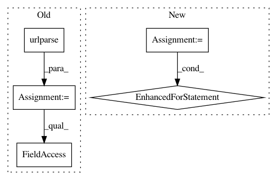

3d091b43f5c817709299d6cdfb95d4b72b356ca4,src/sagemaker/local/image.py,_SageMakerContainer,_prepare_serving_volumes,#_SageMakerContainer#Any#,300
Before Change
container_model_dir = os.path.join(self.container_root, host, "model")
os.makedirs(container_model_dir)
parsed_uri = urlparse(model_location)
filename = os.path.basename(parsed_uri.path)
tar_location = os.path.join(container_model_dir, filename)
sagemaker.utils.download_file(parsed_uri.netloc, parsed_uri.path, tar_location, self.sagemaker_session)
if tarfile.is_tarfile(tar_location):
with tarfile.open(tar_location) as tar:
After Change
host_dir = os.path.join(self.container_root, host)
os.makedirs(host_dir)
model_data_source = sagemaker.local.data.get_data_source_instance(
model_location, self.sagemaker_session)
for filename in model_data_source.get_file_list():
if tarfile.is_tarfile(filename):
with tarfile.open(filename) as tar:
tar.extractall(path=model_data_source.get_root_dir())
volumes.append(_Volume(model_data_source.get_root_dir(), "/opt/ml/model"))
return volumes
In pattern: SUPERPATTERN
Frequency: 3
Non-data size: 5
Instances
Project Name: aws/sagemaker-python-sdk
Commit Name: 3d091b43f5c817709299d6cdfb95d4b72b356ca4
Time: 2018-11-02
Author: nacho950@gmail.com
File Name: src/sagemaker/local/image.py
Class Name: _SageMakerContainer
Method Name: _prepare_serving_volumes
Project Name: GoogleCloudPlatform/cloudml-samples
Commit Name: 50837ed17dbd9e74af2f01a3255cf3148ead1f4a
Time: 2019-04-03
Author: luoshixin@google.com
File Name: sklearn/sklearn-template/template/trainer/utils.py
Class Name:
Method Name: read_df_from_gcs
Project Name: streamlit/streamlit
Commit Name: d24989cdda816343f74a97fc32ce3fd1a689a265
Time: 2019-07-16
Author: thiago@streamlit.io
File Name: lib/streamlit/Server.py
Class Name:
Method Name: _is_url_from_allowed_origins